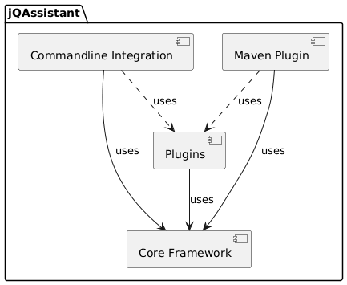

About arc42
arc42, the template for documentation of software and system architecture.
Template Version 1.0 EN. (based upon AsciiDoc version), March 2026
Created, maintained and © by Dr. Peter Hruschka, Dr. Gernot Starke and contributors. See https://arc42.org.
1. Introduction and Goals
1.1. Requirements Overview
1.2. Quality Goals
1.3. Stakeholders
| Role/Name | Contact | Expectations |
|---|---|---|
<Role-1> |
<Contact-1> |
<Expectation-1> |
<Role-2> |
<Contact-2> |
<Expectation-2> |
2. Architecture Constraints
3. Context and Scope
3.1. Business Context
<Diagram or Table>
<optionally: Explanation of external domain interfaces>
3.2. Technical Context
<Diagram or Table>
<optionally: Explanation of technical interfaces>
<Mapping Input/Output to Channels>
4. Solution Strategy
5. Building Block View
5.1. Whitebox Overall System
<Overview Diagram>

- Motivation
-
<text explanation>
- Contained Building Blocks
-
<Description of contained building block (black boxes)>
- Important Interfaces
-
<Description of important interfaces>
<Name black box 1>
<Purpose/Responsibility>
<Interface(s)>
<(Optional) Quality/Performance Characteristics>
<(Optional) Directory/File Location>
<(Optional) Fulfilled Requirements>
<(optional) Open Issues/Problems/Risks>
<Name black box 2>
<black box template>
<Name black box n>
<black box template>
<Name interface 1>
…
<Name interface m>
5.2. Level 2
White Box <building block 1>
<white box template>
White Box <building block 2>
<white box template>
…
White Box <building block m>
<white box template>
5.3. Level 3
White Box <_building block x.1_>
<white box template>
White Box <_building block x.2_>
<white box template>
White Box <_building block y.1_>
<white box template>
6. Runtime View
6.1. <Runtime Scenario 1>
-
<insert runtime diagram or textual description of the scenario>
-
<insert description of the notable aspects of the interactions between the building block instances depicted in this diagram.>
6.2. <Runtime Scenario 2>
…
6.3. <Runtime Scenario n>
7. Deployment View
7.1. Infrastructure Level 1
<Overview Diagram>
- Motivation
-
<explanation in text form>
- Quality and/or Performance Features
-
<explanation in text form>
- Mapping of Building Blocks to Infrastructure
-
<description of the mapping>
7.2. Infrastructure Level 2
<Infrastructure Element 1>
<diagram + explanation>
<Infrastructure Element 2>
<diagram + explanation>
…
<Infrastructure Element n>
<diagram + explanation>
8. Cross-cutting Concepts
8.1. <Concept 1>
<explanation>
8.2.<Concept 2>
<explanation>
…
8.3.<Concept n>
<explanation>
9. Architecture Decisions
9.1. Logging
9.1.1. Logging with SLF4J
Status
Accepted
Context
To ensure consistent log analysis and system monitoring across the application, we need a unified logging abstraction. Without a standard, different modules might use different logging frameworks or inconsistent patterns (e.g., string concatenation), making it difficult to parse logs in centralized systems like ELK or Splunk.
Decision
We adopt SLF4J as the mandatory logging facade. The following rules must be strictly followed:
-
Logger Declaration: Loggers must be declared as
static finalusing the class name.-
private static final Logger log = LoggerFactory.getLogger(MyClass.class);
-
-
Parameterized Logging: Use placeholders (
{}) instead of string concatenation to prevent unnecessary memory allocation.-
log.info("Processing entity with ID: {}", entityId);
-
-
Exception Handling: Always pass the exception object as the final argument to ensure the stack trace is captured.
-
log.error("An unexpected error occurred during processing", exception);
-
-
Log Levels:
-
ERROR: Critical failures requiring immediate action.
-
WARN: Unexpected but non-fatal behavior.
-
INFO: Major business milestones or lifecycle events.
-
DEBUG: Detailed technical information for troubleshooting.
-
Consequences
-
Consistency: All logs follow the same structural patterns, facilitating easier debugging.
-
Performance: Parameterized logging avoids the overhead of string building for disabled log levels.
-
Traceability: Correct exception handling ensures that root causes are visible in the logs.
-
Clean Code: Standardized declarations reduce boilerplate and maintain a clean class structure.
10. Quality Requirements
10.1. Quality Tree
10.2. Quality Scenarios
11. Risks and Technical Debts
11.1. Overview
| Id | Description | Severity | Status |
|---|---|---|---|
Technical debt should be removed from code elements annotated by "@com.buschmais.jqassistant.plugin.java.annotation.TechnicalDebt". |
MAJOR |
FAILURE |
|
Code elements annotated by "@com.buschmais.jqassistant.core.shared.annotation.ToBeRemovedInVersion" should have been removed in given version. |
MAJOR |
FAILURE |
|
A jQAssistant project must have exactly one license specified in its Maven POM. This project has one or more then one license specified. |
MINOR |
WARNING |
|
There should be an Asciidoctor document for the release notes of this version. |
MINOR |
WARNING |
|
Code elements annotated by "@com.buschmais.jqassistant.core.shared.annotation.ToBeRemovedInVersion" will be removed in the given version. |
MINOR |
WARNING |
|
It must exist in the root directory of the project a readme file called 'LICENSE'. This file contains the license of the project and should help users to identify the type of license the project uses. |
MINOR |
SUCCESS |
|
The license definition seems to be wrong. Please ensure to declare the license in this project as follows: <licenses> <license> <name>GNU General Public License, v3</name> <url>https://www.gnu.org/licenses/gpl-3.0.html</url>; </license> </licenses> |
MAJOR |
SUCCESS |
|
System.out or System.err should not be used for logging |
MAJOR |
SUCCESS |
|
Refractor other logging frameworks to Slf4j. |
MAJOR |
SUCCESS |
|
jqa-maven-constraints:AvoidDependenciesTojQAssistantTestArtifacts |
The main artifact created by a jQAssistant Maven project must not depend on jQAssistant test artifacts (i.e. type "test-jar"). Usually the reason is a missing "test" scope in the dependency declaration. |
CRITICAL |
SUCCESS |
The homepage of jQAssistant must be defined as the homepage of the Maven project. Please ensure that the following line is present in the parent POM: |
MINOR |
SUCCESS |
|
The Maven Compiler plugin must NOT define a Java bytecode target version other than "11" as the framework and the plugins must be executable in environments where only Java 11 is available. |
CRITICAL |
SUCCESS |
|
The information on the organisation of the jQAssistant project is not correct or even missing. Below you can find the correct way to specify the organisation in the toplevel POM of the Maven project. <organization> <name>jQAssistant Development Team</name> <url>https://jqassistant.org</url>; </organization> |
MAJOR |
SUCCESS |
|
The Maven project must provide a useful description of the project. Please ensure that the description element is given in the Maven project. Example: <description> This plugin for jQAssistant provides support for scanning the black hole in the center of the solar system. </description> |
MINOR |
SUCCESS |
|
The name of the project must be given in the Maven project. Furthermore the name must start with JQAssistant. Please ensure that a line similar to to the following line is present in the parent POM: <name>jQAssistant FooBar Plugin</name> |
MINOR |
SUCCESS |
|
The SCM section of this jQAssistant project seems to be not correct. Please ensure that the developer connection and the connection point to a repository in the jQAssistant organization at Github. The SCM section of this project should be similar to this one: <scm> <connection>scm:git:git@github.com:jqassistant/jqa-xyz-plugin.git</connection> <developerConnection>scm:git:git@github.com:jqassistant/jqa-xzy-plugin.git</developerConnection> <url>https://github.com/jqassistant/jqa-xyz-plugin</url>; </scm> |
BLOCKER |
SUCCESS |
|
The Maven toplevel POM in project must provide its own version information. Example: <version>1.9</version> |
MINOR |
SUCCESS |
|
jqa-plugin:ImplictlyRegisteredLabelsShouldNotBeRegisteredExplicitly |
XO @Label-interfaces should not be registered explicitly if a deriving interface registers it implicitly. Rationale: Reduce class loading/initialization time at startup in larger classpath contexts (e.g. Maven plugin). |
INFO |
SUCCESS |
All XO @Label types must be registered in the plugin descriptor. |
MAJOR |
SUCCESS |
|
The root element of the plugin descriptor must provide the id attribute. The id itself must start with the prefix 'jqa.plugin'. An example for a valid root element declaration for a plugin descriptor must look like this <jqassistant-plugin xmlns="http://schema.jqassistant.org/plugin/v1.10" name="<Name of the Plugin>" id="jqa.plugin.<pluginid>"> … |
MAJOR |
SUCCESS |
|
Each repository should contain an editor config configuration file called '.editorconfig' in its root directory. For more details on '.editorconfig' see https://editorconfig.org/ |
MINOR |
SUCCESS |
|
It must exist in the root directory of the project a readme file called 'readme.adoc'. This file will be displayed on Github while browsing the repositories. |
MINOR |
SUCCESS |
11.2. Details
java:TechnicalDebt
jqa-technical-debt:CodeElementToBeRemoved
jqa-legal:license:only-one-in-pom
jqa-project-layout:documentation:releasenotes-exists
jqa-technical-debt:CodeElementToBeRemovedInVersion
jqa-legal:license:exists
jqa-legal:license:is-correctly-defined
jqa-logging:IllegalUsageOfSystemOutAndErr
jqa-logging:UseSlf4jForLogging
jqa-maven-constraints:AvoidDependenciesTojQAssistantTestArtifacts
jqa-maven-constraints:homepage
jqa-maven-constraints:java-compiler-target-version
jqa-maven-constraints:organisation-present
jqa-maven-constraints:project-description
jqa-maven-constraints:project-name
jqa-maven-constraints:scm-connection-declaration
jqa-maven-constraints:version-information
jqa-plugin:ImplictlyRegisteredLabelsShouldNotBeRegisteredExplicitly
jqa-plugin:UnregisteredLabel
jqa-plugin:pluginid-must-be-given
jqa-project-layout:editorconfig:exists
jqa-project-layout:readme:exists
12. Glossary
| Term | Definition |
|---|---|
<Term-1> |
<definition-1> |
<Term-2> |
<definition-2> |